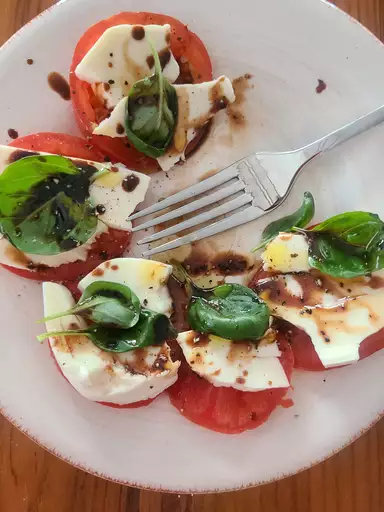

Caprese Salad with Balsamic Reduction

Description
Art and food, there is no greater combination of disciplines. This dish is simple yet ravishing in it's nature. Let's not forget, garnishing is the name of this game. The colors in this salad compliment each other so well. As you put the finishing touches you yourself will feel like Vincent Van Gogh, a Pablo Picasso, dear I say even a Leonardo da Vinci.
Ingredients
- 1 cup balsamic vinegar
- 1/4 cup honey
- 3 large tomatoes, cut into 1/2-inch slices
- 1 (16 ounce) package fresh mozzarella cheese, cut into 1/4-inch slices
- 1/4 teaspoon salt
- 1/4 teaspoon ground black pepper
- 1/2 cup fresh basil leaves
- 1/4 cup extra-virgin olive oil
Steps
- Stir balsamic vinegar and honey together in a small saucepan and place over high heat. Bring to a boil, reduce heat to low, and simmer until mixture has reduced to 1/3 cup, about 10 minutes. Set aside to cool.
- Arrange alternating slices of tomato and mozzarella decoratively on a serving platter. Sprinkle with salt and black pepper, tuck basil leaves around slices, and drizzle with olive oil and the balsamic reduction.